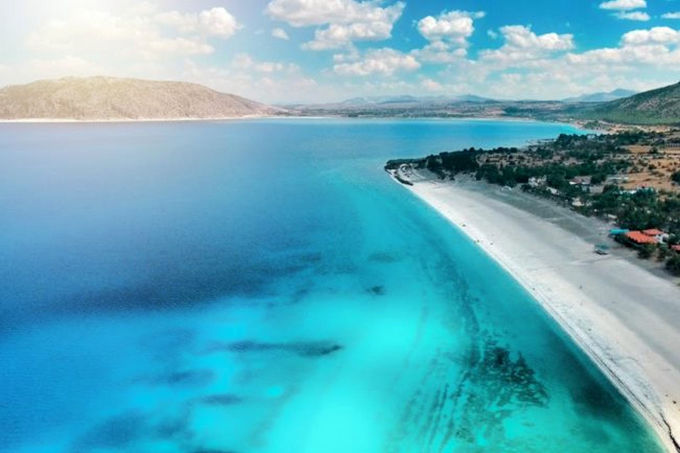
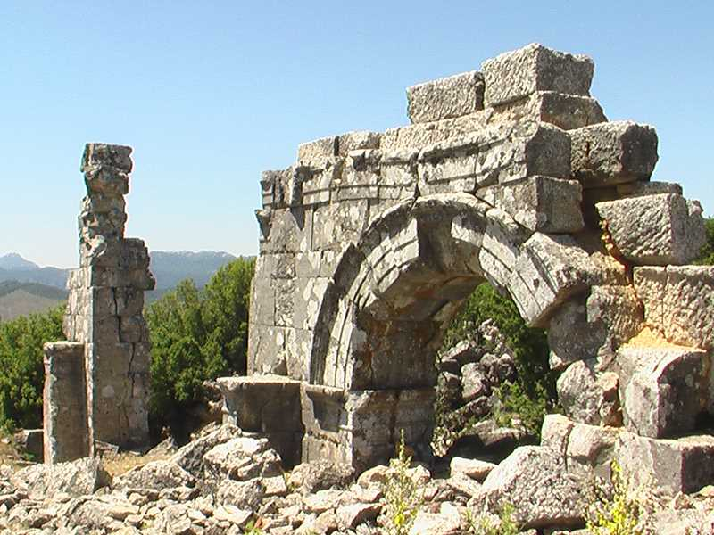
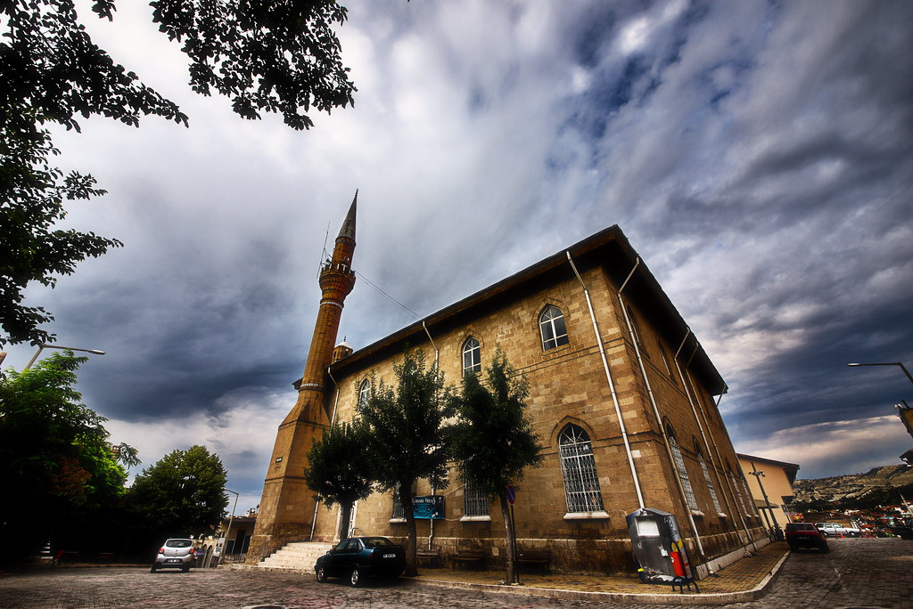
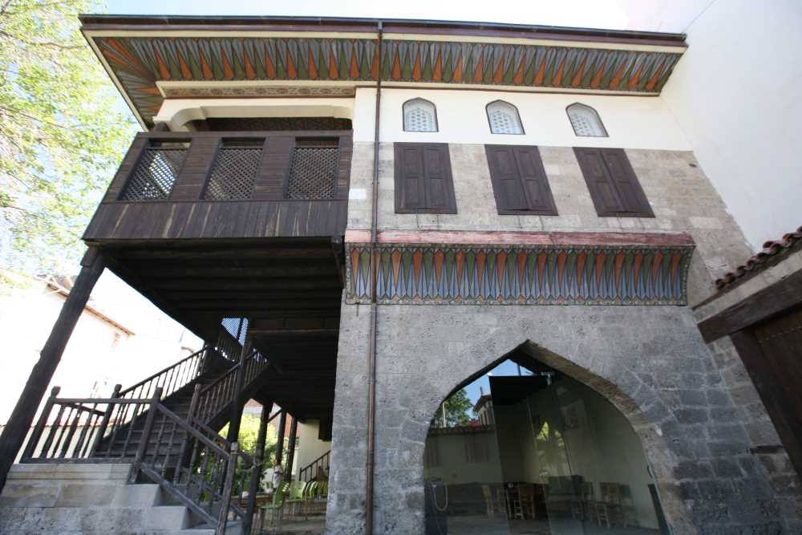

Burdur Kültürel Yerler
Göller Yöresi'nin Kültürel Mirası
Müzeler

Burdur Müzesi
Bölgenin zengin arkeolojik ve etnografik eserlerini sergileyen müze.

Sagalassos Antik Kenti
Roma döneminden kalma önemli bir antik kent ve açık hava müzesi.
Tarihi Yapılar

İnsuyu Mağarası
Doğal oluşumlu, sarkıt ve dikitleriyle ünlü mağara.

Salda Gölü
Turkuaz rengi suları ve beyaz kumsallarıyla ünlü doğal göl.

Cremna Antik Kenti
Roma döneminden kalma önemli bir antik kent.
Tarihi Camiler

Ulu Cami
Selçuklu döneminden kalma, şehrin en eski camisi.

Taş Oda
Osmanlı döneminden kalma tarihi yapı.